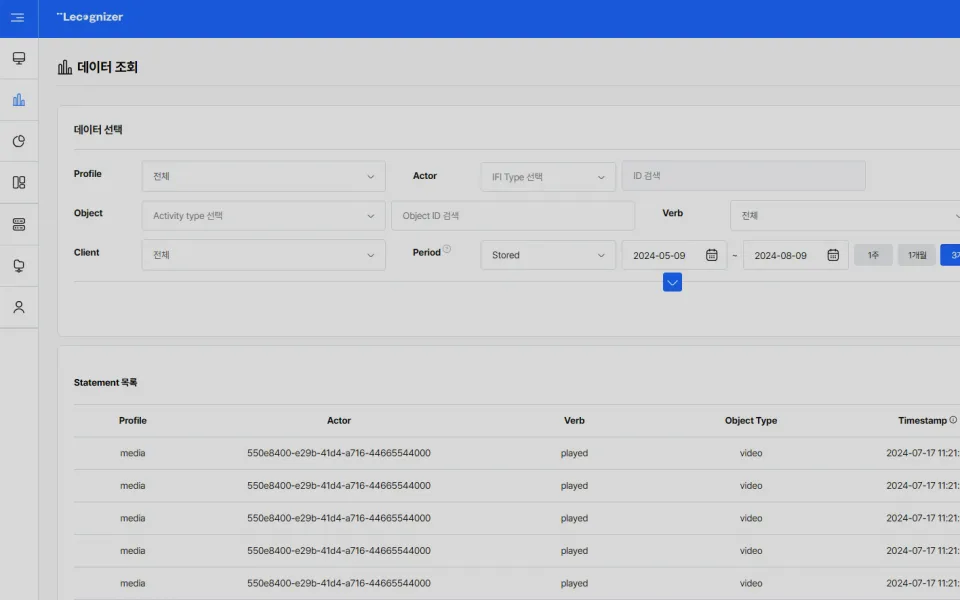
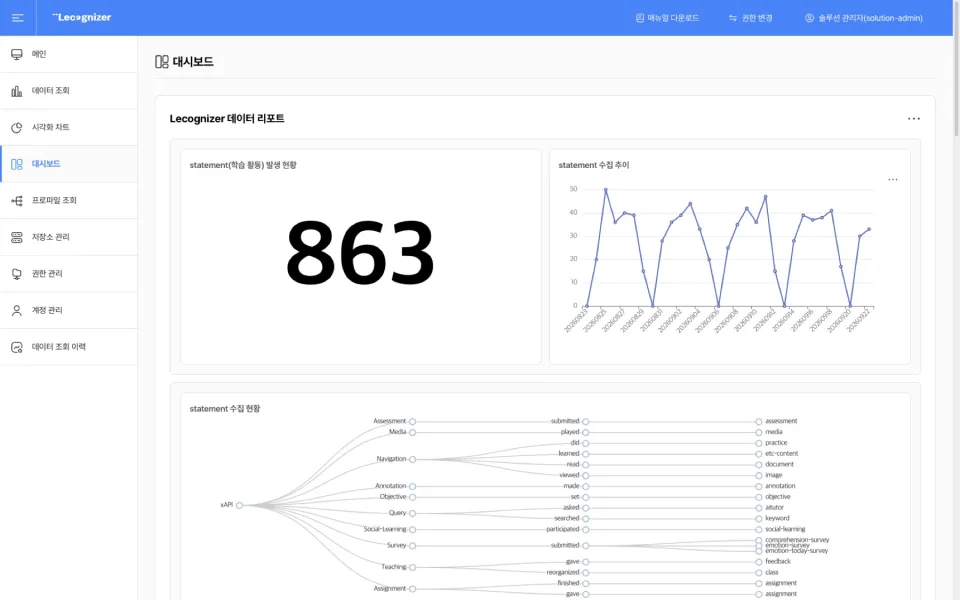
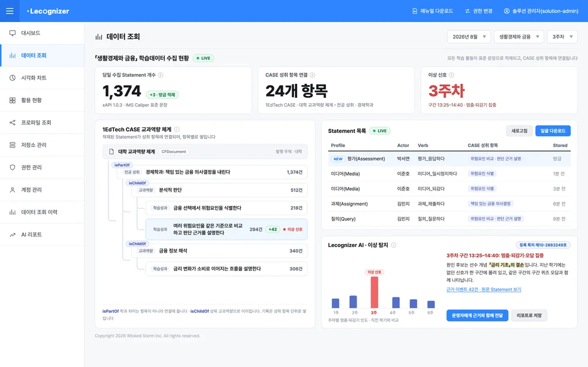
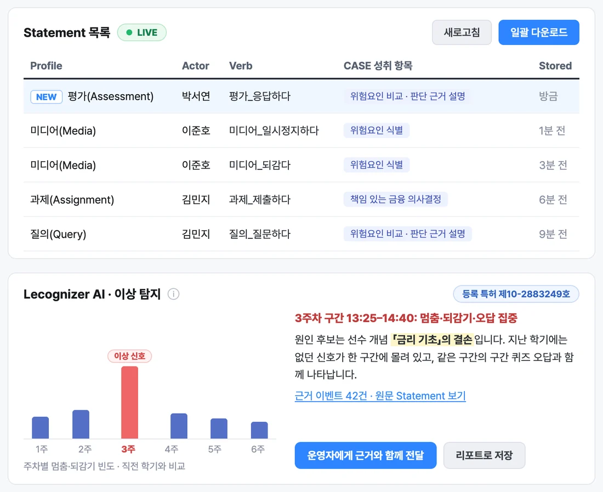

教育部 · 国家レベル
AIデジタル教科書
学習データハブ構築
AIデジタル教科書の学習データを国際標準で収集するハブを構築し、国家レベルの学習分析指標・教育課程標準体系・学習マップを支援しました。
 Pipeline
Pipeline
学習データは最初から国際標準で取り込まれ、収集されたまま蓄積・分析されます。
国際標準でリアルタイムに収集
教育・学習・運営のあらゆる活動から生まれる学習データを、同じ基準で集めます。
教育課程の文脈とともに蓄積
学習活動が教育課程のどの項目で起きたのか、その文脈まで含めて蓄積します。
通常と異なる兆候を検知してアラートを発信
蓄積した学習データから、多くの学習者がつまずいた箇所を優先順位を付けて知らせます。
人が判断し、実行
アラートと元データを確認して人が判断し、その結果が再び学習データとして蓄積されます。
ONE PIPELINE
収集・保存・分析をひとつに
国際標準で収集した学習データを一か所に保存し、AIで分析します
01収集
国際標準でリアルタイムに収集

02保存
教育課程の文脈とともに蓄積

03分析
Lecognizer AIが異常の兆候を検知

授業に活かした結果も、再び学習データとして蓄積されます
 Product · Learning Loop
Product · Learning Loop
Lecognizerが学習データを蓄積して兆候を見つけ出すと、LearnHubble AIがその兆候を管理者・教員・学習者の判断と行動へとつなげます。

Learning Data Repository
AIによる異常検知を備えた国際標準の学習データリポジトリです。教育・学習・運営のあらゆる活動から生まれる学習データをリアルタイムに収集・保存し、1EdTech CASEに基づく教育課程の文脈とともに蓄積します。

AI Anomaly Detection
Lecognizerに蓄積された学習データを分析するAIソリューションです。通常と異なる兆候や多くの学習者がつまずいた箇所を見つけて知らせ、その根拠となった元データまでつなげて示します。

※ 画面は韓国語UIです。画面内の教科・人物・数値は、製品説明のためのデモ用データです。
 Learning Experience Platform
Learning Experience Platform
LearnHubble AI
学習者が講義や課題に取り組む中、必要なときにAIが説明とヒントを提供します。
答えは学習者が自分で書き、支援と適用は教員が確認します。


※ 学習者画面の例です（韓国語UI）。画面内の講義・人物・数値はデモ用データです。
 References
References
国家レベルの学習データ収集・分析の経験をもとに、公共機関や教育機関とともにデータに基づく革新を進めてきました。
教育部 · 国家レベル
AIデジタル教科書の学習データを国際標準で収集するハブを構築し、国家レベルの学習分析指標・教育課程標準体系・学習マップを支援しました。
KERIS · 「トクトク！算数探検隊」
ゲーミフィケーションを取り入れた授業支援システムで学習行動データを収集し、レベル診断・問題推薦モデルを適用しました。累計利用者数240万人の国民向けサービスです。
人事革新処 · 人材開発
人材開発プラットフォームのソーシャルコミュニティや、リアルタイムの大規模ウェビナーで生まれるソーシャルラーニングの経験を、学習データとして具体化して収集しました。
ソウル特別市 · 教育プラットフォーム
ソウル型教育プラットフォームのオンラインメンタリングで、メンターとメンティーの相互作用、感情の状態や発話を学習データとして収集し、深い学習分析を支援します。

 Standards Leadership
Standards Leadership
Wicked Stormは、国際的な教育技術標準コンソーシアム1EdTechの韓国組織である1EdTech Koreaの設立理事会に参画し、1EdTech Contributing Memberとして活動しています。xAPI・Caliperと1EdTech CASEを製品と事業に適用してきました。
 1EdTech Korea設立理事会 · Contributing Member
1EdTech Korea設立理事会 · Contributing Member
 Feed · Update
Feed · Update


現場の様子は、各チャンネルでいち早くお届けします
イベントの様子や製品画面、標準・技術ノートをInstagramとブログで発信しています。詳しい記事は、このホームページのニュースに掲載します。
 Resources
Resources
展示会でお配りしたカタログと会社案内を、PDFでダウンロードいただけます。

Lecognizer、LearnHubble AI、そしてLearning Loopを8ページにまとめました。

 Company · Vision
Company · Vision
あらゆる学習体験を国際標準のデータでつなぎ、より良い教育と成長の根拠をつくります。
Slogan学びのすべての瞬間を、成長のデータとして設計します。
 History
History
 Contact
Contact
Lecognizerの導入、LearnHubble AIのデモ、学習データ設計のコンサルティング、協業のご相談まで、機関のご環境に合わせてご案内いたします。
韓国ソウル特別市江西区麻谷中央路161-8 A棟901〜905号
お問い合わせ内容を確認のうえ、ご入力いただいたメールアドレスへご返信いたします。